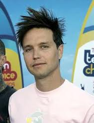

|
 | ||
Mark Hoppus: (lahir di Ridgecrest, California, 15 Maret 1972; umur 38 tahun) adalah musisi Amerika yang membentuk band beraliran punk rock, Blink-182, dan band beraliran rock alternatif, +44. Dia bermain bass di kedua band tersebut.Ketika Mark berumur 15 tahun, ia mendapatkan bass pertamanya sebagai hadiah ulang tahun dari ayahnya. Mark belajar bass dengan cara otodidak. Pada bulan Agustus 1992, adik Mark yang bernama Anne memperkenalkannya pada Tom DeLonge. Pada tahun 1992, Mark dan Tom bertemu dengan Scott Raynor. Lalu mereka bertiga sepakat untuk membuat grup musik yang dinamakan Blink-182. Pada tahun 1996, Scott Raynor terkena penyakit yang disebabkan oleh minuman keras. Scott harus keluar dari Blink-182 untuk menjalani rehabilitasi. Scott keluar pada tahun 1997 setelah Blink-182 merilis album Dude Ranch. Pada tahun 1997, Blink-182 melakukan tur bersama The Aquabats. Di situ mereka bertemu dengan Travis Barker. |
||
| copyright © irvanabdurrahman2010 | ||